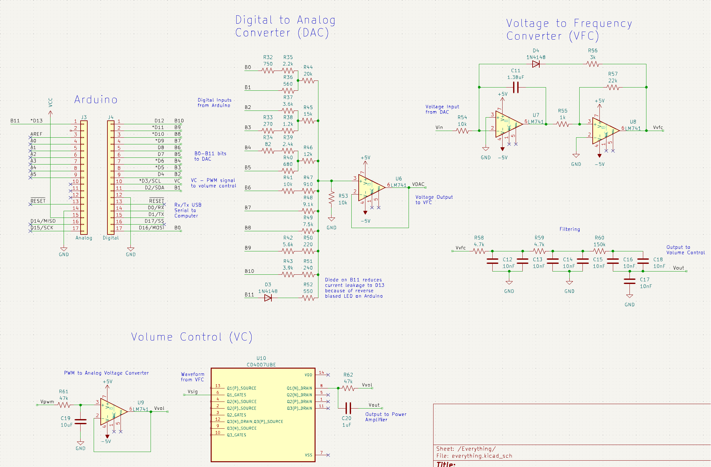
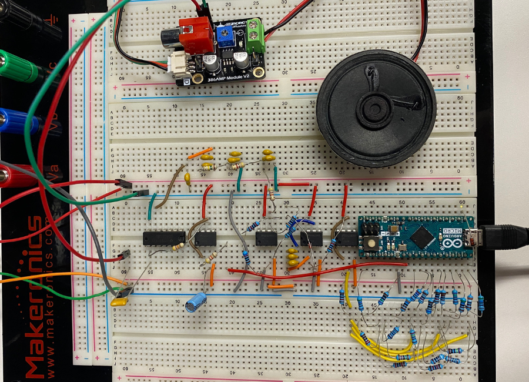

Mixed-mode Electric Piano
This piano was developed as a final project for Caltech EE 45, Electronic Systems and Laboratory. The piano can play 12 different notes ranging from C4 to B4, spanning an entire octave. All 12 keys of the piano generate frequencies close to the exact frequencies of the notes with minimal error (+/- 1 Hz). A custom GUI runs on a computer and interfaces with the system to control the frequency, volume, and tone of the note being played. The system is responsible for generating a waveform from user input, filtering the waveform, modifying the amplitude of the waveform, and then outputting the waveform to a speaker.
System Architecture
 User input is interpreted by the Graphical User Interface
(GUI) running on the computer and communicates it to the Arduino via USB. The Arduino sets its digital
output pins accordingly so that the Digital to Analog Converter (DAC) can output an analog voltage that
varies depending on which note should be played. The Voltage to Frequency Converter (VFC) receives the
output of DAC as an input and converts the analog voltage to a waveform of the desired frequency. The
Volume Controller (VC) then adjusts the amplitude of the waveform as determined by a signal from the
Arduino. This waveform is then output to a power amplifier which plays the note through a speaker.
User input is interpreted by the Graphical User Interface
(GUI) running on the computer and communicates it to the Arduino via USB. The Arduino sets its digital
output pins accordingly so that the Digital to Analog Converter (DAC) can output an analog voltage that
varies depending on which note should be played. The Voltage to Frequency Converter (VFC) receives the
output of DAC as an input and converts the analog voltage to a waveform of the desired frequency. The
Volume Controller (VC) then adjusts the amplitude of the waveform as determined by a signal from the
Arduino. This waveform is then output to a power amplifier which plays the note through a speaker.
Digital to Analog Converter (DAC)
Since there are the 12 notes on the chromatic scale the piano plays, there are 12 inputs from the Arduino to the DAC, and each input corresponds to a different note. For each note, a different digital pin (B0 to B11) will be set to digital output HIGH (about 5 V) while all other pins will be set to high impedance mode (Hi-Z). Setting the non-relevant pins to HI-Z essentially disconnects them from the circuit and this can be accomplished by setting these Arduino pins to digital input mode instead of digital output mode. The DAC internally consists of a voltage divider connected to all the Arduino pins. It varies in voltage as the Arduino pins change, and this voltage connects to a buffer to ensure the voltage divider does not vary as current is drawn from the output of the DAC.
Voltage to Frequency Converter (VFC)
The VFC converts analog voltages output by the DAC into waveforms with corresponding frequencies. Before any filtering occurs, the VFC generates a square wave. The components values of the circuit are calibrated so that op amp U3 operates as a Schmitt trigger, triggering between saturation values as the capacitor charges and discharges periodically. The square wave is then passed into a three stage low pass filter. This works to remove harsh frequencies and harmonics that may distort the output waveform, giving the final output a cleaner tone. The original square wave becomes smoother and starts to resemble a sine wave as it gets filtered.
Volume Controller (VC)
The volume controller works by varying the drain voltage of a common source stage transistor being operated in the triode region. Since the Arduino is not capable of producing an analog voltage, one its digital pins is used to create a PWM signal. However, since the piano is a frequency sensitive application with potential cutoff frequencies, it was necessary to convert this to an analog signal. The Arduino can control the duty cycle of this signal, so a PWM to analog voltage converter was added before this voltage is passed into the resistive load on the drain of the transistor. Because the gain of the transistor stage varies with drain voltage, the amplitude of the waveform is affected as well, thus adjusting the volume of the system.

